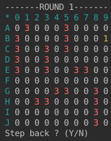

This project is basic battleship game in console. Goal is to put this game on web page. But this project is sill under construction. To make this project little more interesting I created AI. One typo of AI just programed. That means that it consist only of conditions and algorithms.
Challenge for this project is creating AI which is based on neural network. I already have
implemented working perceptron on which i used neuroph Java library. It is big challenge to
create neural network for this game because board consist of 100 items. It is also hard because
player don't see board of his opponent so its only guessing game. I will create neural network
to solve only rows of play board and make it to learn only that. It will not be perfect but it
will at least work somehow.

public static final String ANSI_RESET = "\u001B[0m";
public static final String ANSI_BLACK = "\u001B[30m";
public static final String ANSI_RED = "\u001B[31m";
public static final String ANSI_GREEN = "\u001B[32m";
public static final String ANSI_YELLOW = "\u001B[33m";
public static final String ANSI_BLUE = "\u001B[34m";
public static final String ANSI_PURPLE = "\u001B[35m";
public static final String ANSI_CYAN = "\u001B[36m";
public static final String ANSI_WHITE = "\u001B[37m";
System.out.print(Util.ANSI_CYAN + "daco"+ " " + Util.ANSI_RESET);
Now I have done only console representation of game. Interesting thing on this console game is colors of console. You can achieve similar look if you use code I shared with you. You can find code on my github of on this link. If you have any suggestion or some idea to make that neural work feel free to let me know. I will be very grateful.